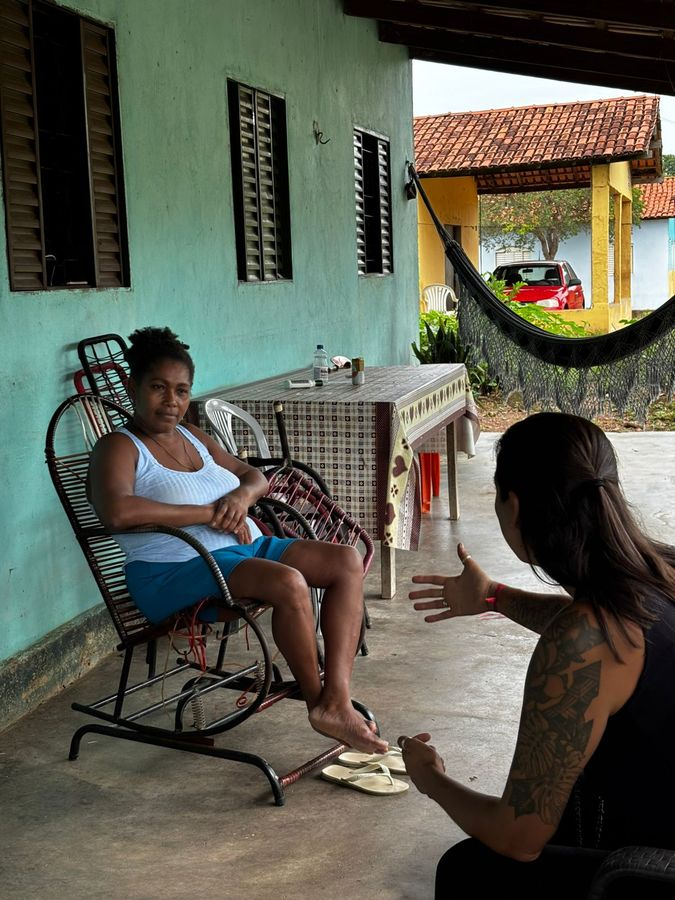
Escuta territorial
Conversas, visitas e reconhecimento de histórias, saberes, conflitos e potências a partir de quem vive o território.
Conectamos comunidades, instituições e organizações para reconhecer potências, fortalecer vínculos e transformar conhecimento local em caminhos de desenvolvimento.
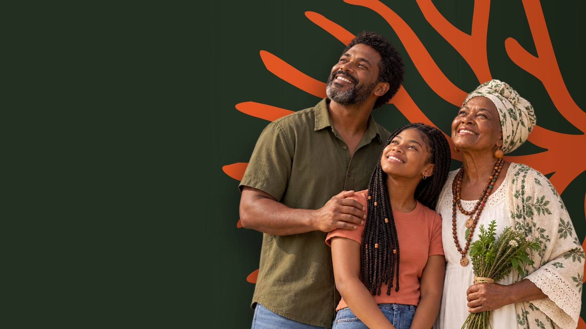
Assim como o micélio conecta raízes e florestas subterrâneas, atuamos sobre as relações que sustentam os territórios. Nosso trabalho parte da escuta, do reconhecimento de saberes e da construção coletiva de caminhos possíveis.
Mais do que formular projetos, acompanhamos processos para que comunidades e instituições consigam transformar pertencimento, cultura e ativos locais em desenvolvimento com continuidade.
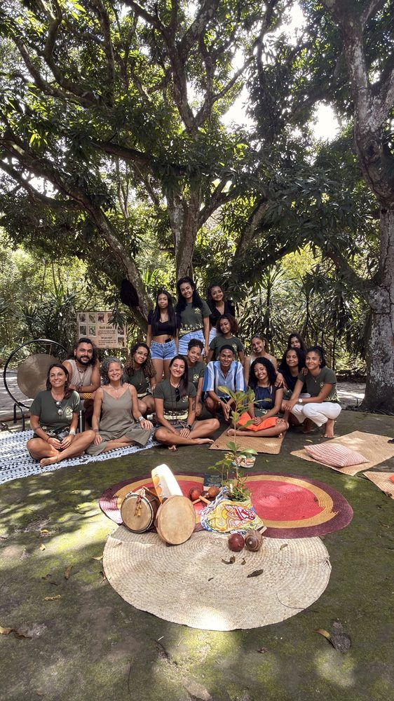
A atuação é multidisciplinar e colaborativa. A equipe aproxima pessoas, instituições e oportunidades para transformar leitura territorial em processos viáveis e contínuos.

Conversas, visitas e reconhecimento de histórias, saberes, conflitos e potências a partir de quem vive o território.
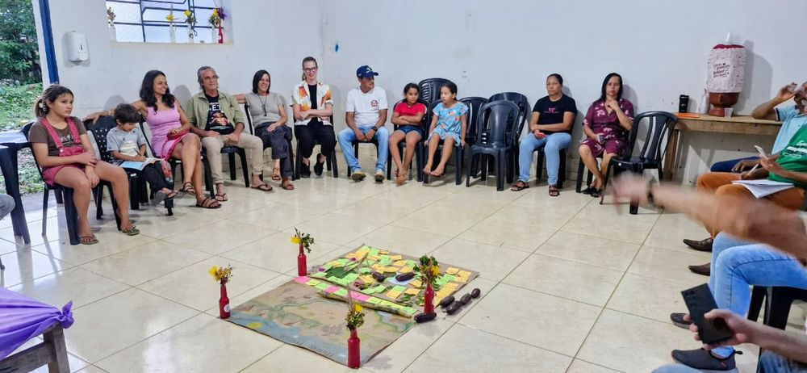
Encontros, círculos e processos participativos para fazer grupos se reconhecerem, decidirem juntos e criarem pactos.
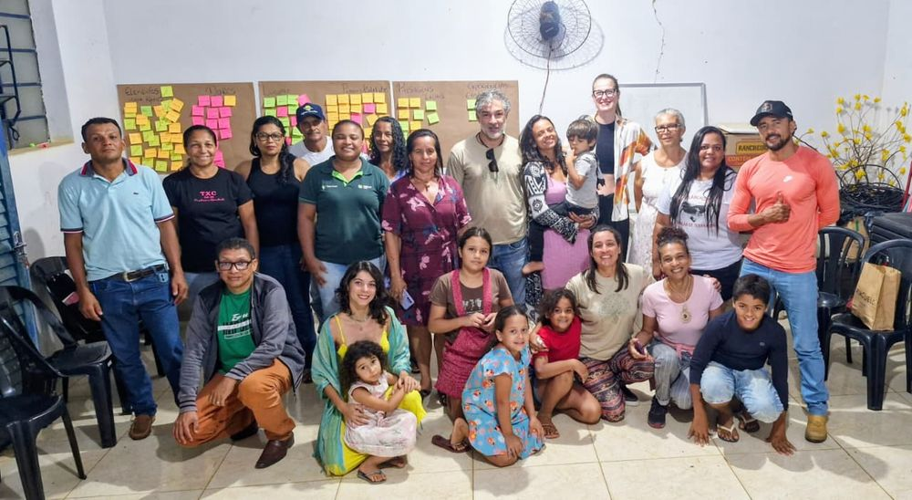
Conexão entre comunidade, poder público, empresas e parceiros para sustentar decisões e continuidade.
Cada projeto é construído de acordo com o estágio, a realidade e os objetivos do território. As soluções podem acontecer de forma independente ou como partes de uma mesma jornada.
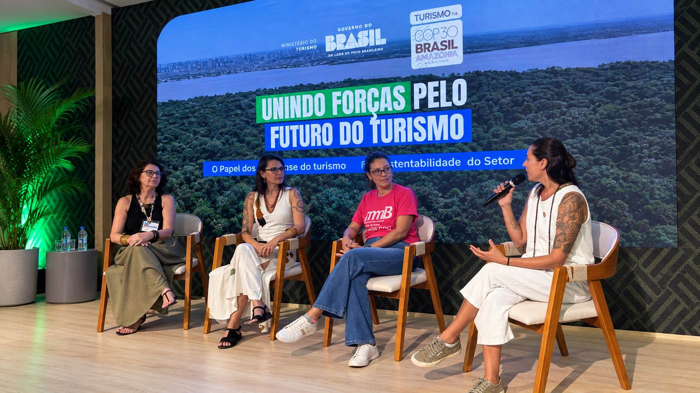
Educação como caminho para o Turismo Regenerativo.
Educação como caminho para o Turismo Regenerativo. Uma palestra inspiradora que provoca uma nova forma de olhar para o turismo, os territórios e o papel de cada pessoa na construção de futuros mais vivos.
Indicada para eventos e encontros de turismo, empresas, instituições públicas, universidades, escolas, organizações da sociedade civil e comunidades. A palestra apresentada na COP30 é uma das referências do conteúdo.
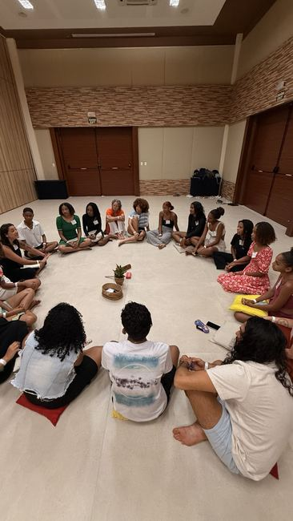
Destravar um grupo e sair com um pacto coletivo.
Uma vivência que faz um grupo se reconhecer, se escutar e decidir junto. É por aqui que quase todo projeto deveria começar.
Formatos: 3h para evento, congresso ou conselho; 1 dia para empresa, equipe ou trade; 2 dias para imersão em comunidade; ou 4 encontros como processo continuado. Indicado para comunidades e associações, conselhos municipais, equipes de empresas e hotéis, cooperativas, grupos de juventude e abertura de projetos territoriais.
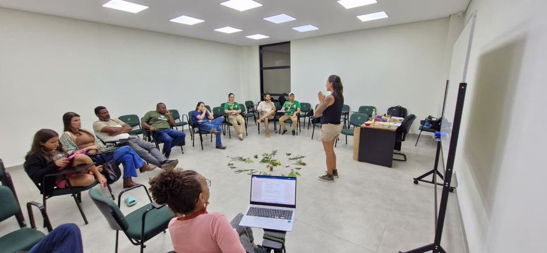
Saber o que o território realmente tem antes de investir.
Antes de investir em roteiro, plano ou obra, descobrimos o que o território de fato tem — e se as pessoas estão prontas para colocar isso em movimento.
Por que isso protege seu investimento: o erro mais caro em turismo comunitário é estruturar experiências que ninguém compra. Aqui, oferta e demanda são analisadas antes de qualquer coisa ser construída. Entrega em documento diagramado + apresentação presencial dos resultados.
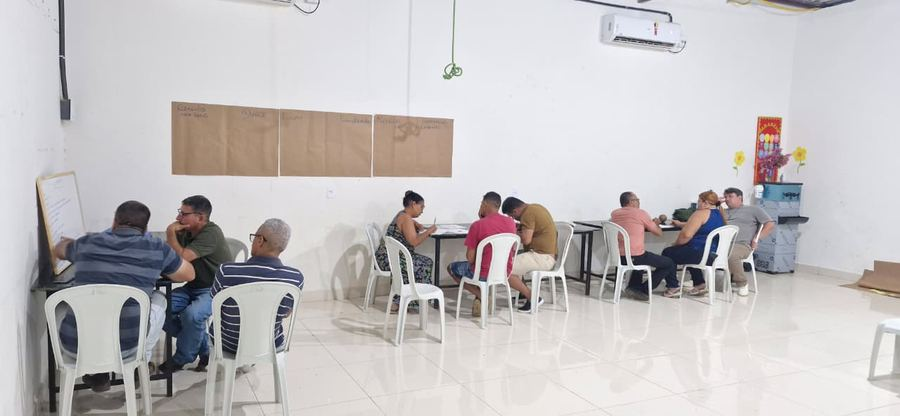
Registrar, proteger e valorizar a cultura local.
Registrar quem sabe fazer, o que sabe fazer e com quem aprendeu — antes que se perca. É proteção cultural e matéria-prima para tudo que vier depois.
Um valor que costuma passar despercebido: este inventário atende ao mesmo tempo turismo, cultura e meio ambiente. Pode ser desenhado também para captação via mecanismos de fomento à cultura.
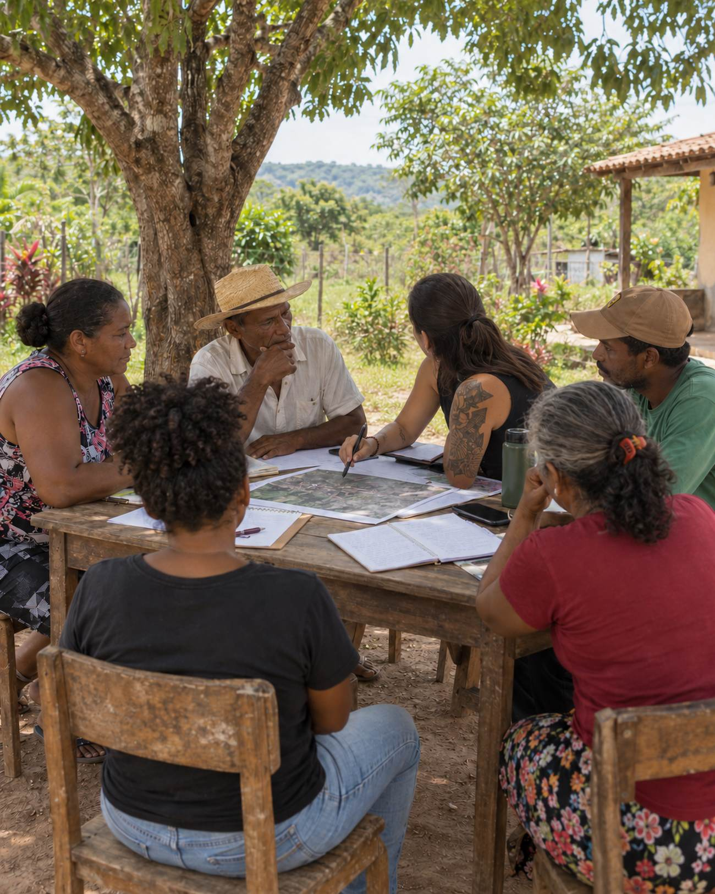
Transformar o território em experiências vendáveis.
O passo em que o território deixa de ter potencial e passa a ter produto. Desenhado com a comunidade, precificado, com anfitrião preparado e canal de venda encaminhado.
Nosso compromisso: um roteiro só está pronto quando alguém pode comprá-lo. Não entregamos plano que termina na gaveta — trabalhamos até que a experiência tenha preço, responsável e onde ser vendida.
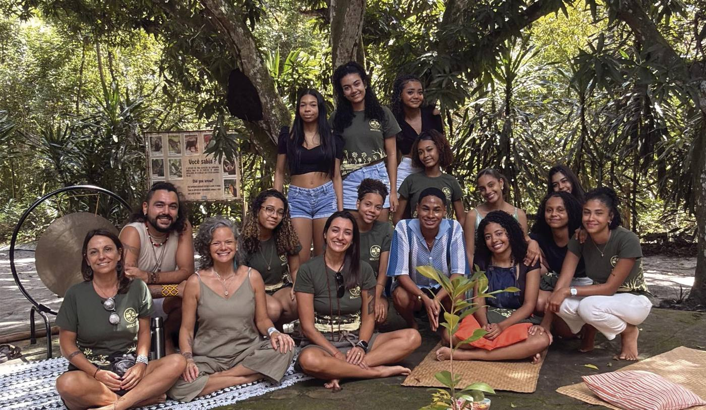
Reconectar os jovens ao destino em que vivem.
Um programa de seis meses que devolve ao jovem do destino o direito de se sentir dono do lugar onde nasceu. Já foi realizado em oito edições em Praia do Forte.
O objetivo não é convencer o jovem a ficar. É que ele possa escolher — e que, se sair, saia porque quis, não porque nunca se viu ali.
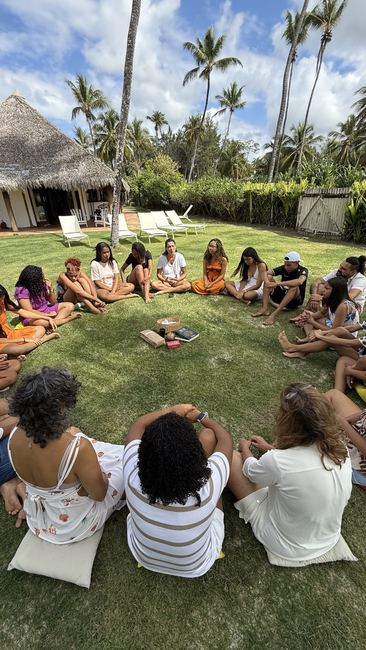
Preparar a comunidade para receber com qualidade.
Preparar quem recebe é preparar o destino inteiro. A formação transforma moradores, mestres, produtores e empreendedores em anfitriões capazes de conduzir experiências com qualidade e autonomia.
Um roteiro estruturado sem anfitrião preparado é uma experiência que não resiste à primeira visita. A formação é o elo entre o que foi desenhado no papel e o que o visitante de fato vive.
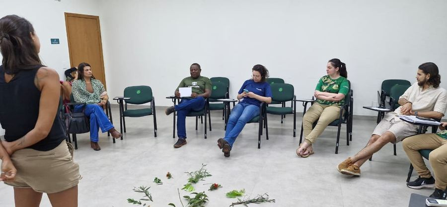
Garantir que o que foi construído continue vivo.
A fase que transforma implantação em continuidade: pactos, acompanhamento, indicadores e clareza sobre quem cuida do quê.
O objetivo é reduzir a dependência externa e deixar o território capaz de sustentar o que foi construído, inclusive diante de mudanças de gestão ou de equipe.
“ESG” não é uma obrigação genérica — é um conjunto de exigências diferentes, cada uma pedindo um tipo de evidência social.
Fornecemos o material primário que sustenta qualquer uma delas.
Não prometemos “cumprir sua obrigação ESG” — a maior parte do que isso cobre é voluntário. Prometemos o dado, o registro e a metodologia que sustentam o relato, seja ele exigido por licenciamento, financiador ou reporte voluntário.
O trabalho muda de acordo com o território, mas parte do mesmo princípio: ouvir antes de desenhar.
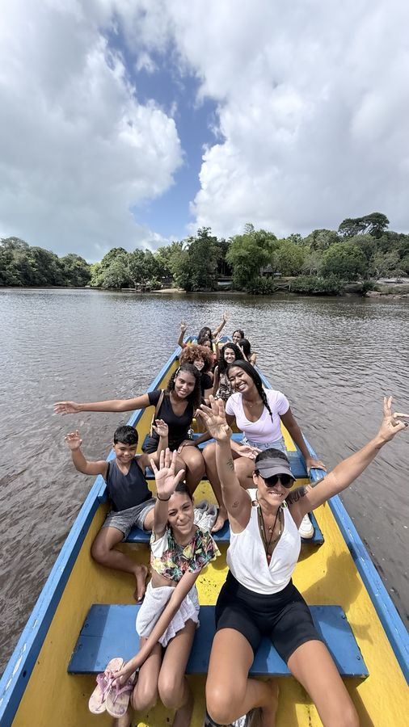
Processos com juventude, pertencimento, turismo regenerativo e conexão entre comunidade, natureza e economia local.
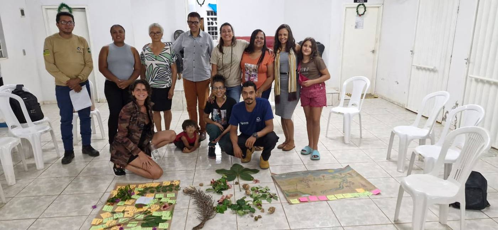
Escuta territorial, inventário de saberes, círculos regenerativos e construção coletiva de caminhos para o desenvolvimento local.
Começamos pelas pessoas, pelas memórias, pelos conflitos e pelas potências que o território já possui.
Aproximamos atores, saberes, instituições e oportunidades que normalmente aparecem separados.
Transformamos leitura territorial em experiências, pactos, formação, produtos e projetos viáveis.
Acompanhamos para que o processo ganhe autonomia, continuidade e capacidade local de decisão.
Registros reais de escuta, participação, pertencimento e construção coletiva.
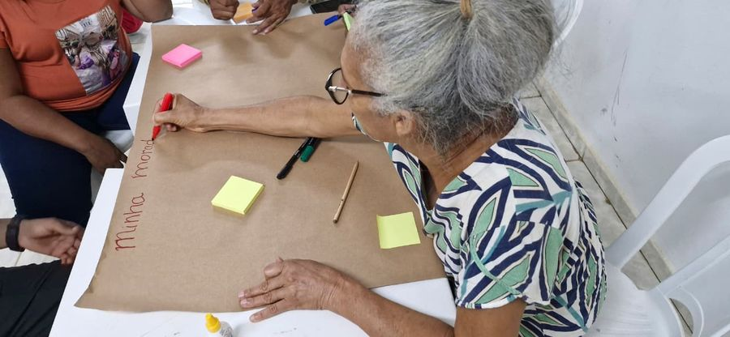
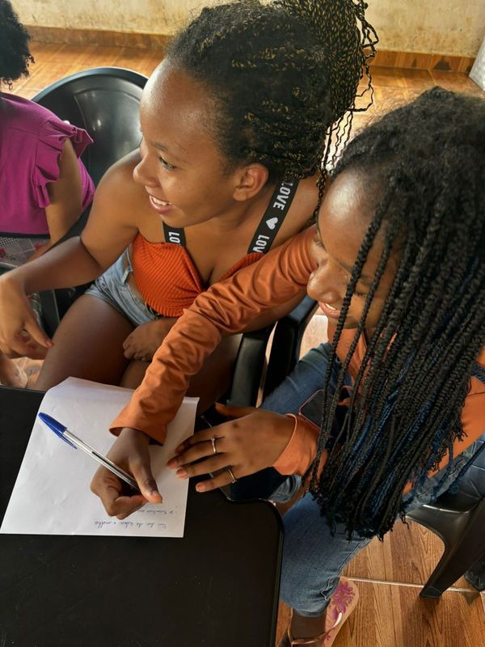
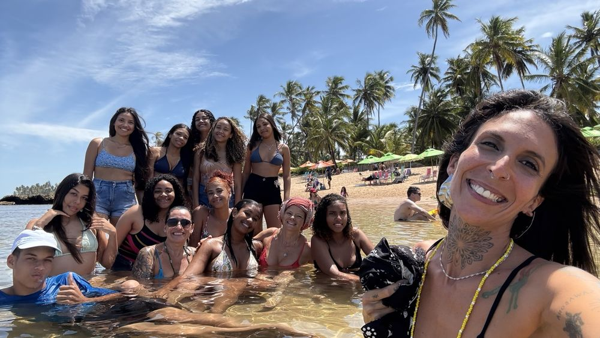
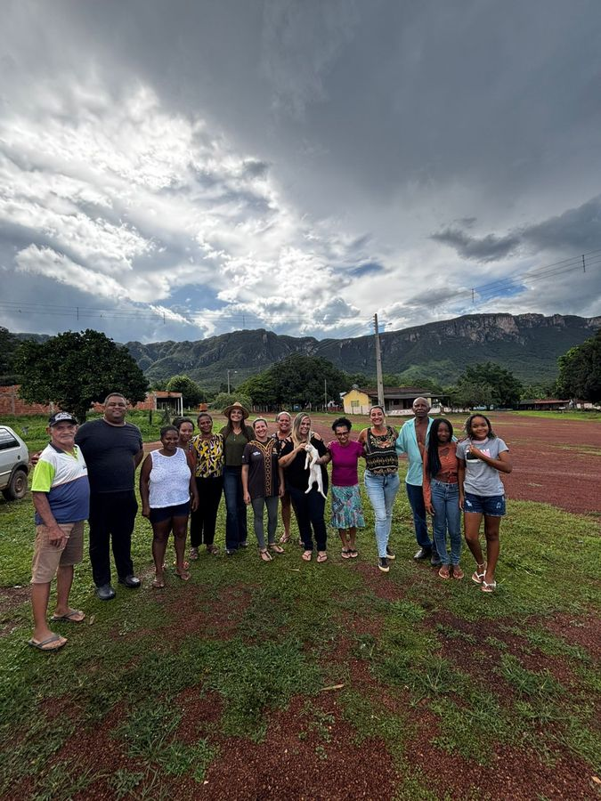
Planejamento territorial, cultura, turismo e processos participativos.
Sebrae e demais instituições do Sistema S: desenvolvimento local, produtos, roteiros e fortalecimento de comunidades.
Associações, institutos e organizações da sociedade civil: mobilização, governança e projetos coletivos.
Relação com território, licença social, juventude e impacto real.
Formação, pesquisa aplicada, extensão e experiências territoriais.
Educação territorial, pertencimento, cultura e aprendizagem viva.
Conte para a Micélio em que estágio o território está. A partir daí, estruturamos a solução mais coerente para começar.
Conversar pelo WhatsApp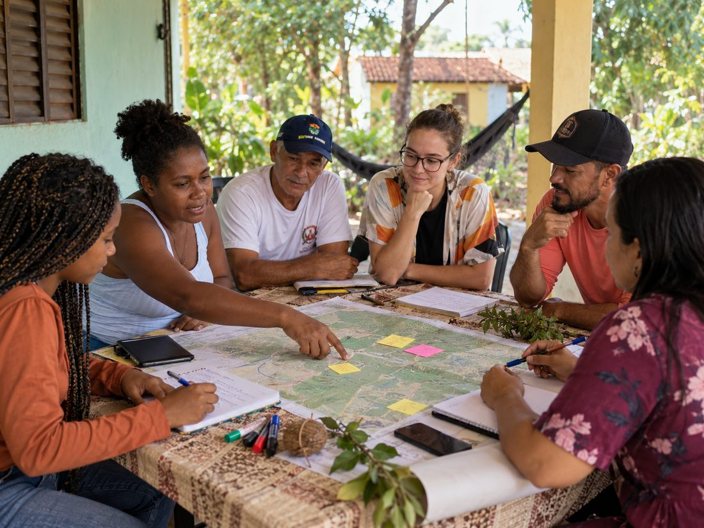